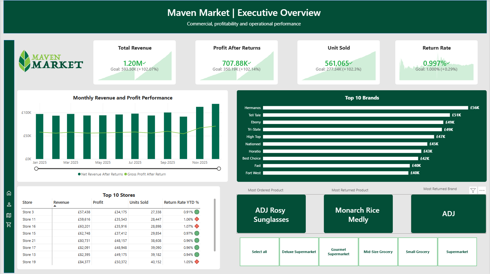

FB
Fola Balogun
Business Intelligence & Data Analyst
BUSINESS INTELLIGENCE · DATA ANALYTICS · MANAGEMENT INFORMATION
Hi, I’m Fola Balogun.
Turning complex data into clear, decision-ready insight.
I’m a Business Intelligence & Data Analyst with experience across banking, finance and business operations. I build controlled, management-ready reporting from complex operational data, combining data quality, performance analysis and visualisation to help stakeholders understand performance, identify risk and make informed decisions.
Power BI
SQL
Excel
Power Query
Management Information
PROFESSIONAL SNAPSHOT
Operational experience behind the analysis.
My background spans banking, finance, business operations and management reporting, where I have worked with high-volume transactional data, reconciliations, budgeting, reporting controls and performance analysis.
Projects
Practical analytics projects built around business questions, controlled data and decision-ready reporting.
Featured Project

Banking Operations & Portfolio Performance
Built a controlled management-information layer from fragmented banking data, using MySQL for validation and analytical logic and Excel for decision-ready reporting across customers, transactions, portfolio structure, credit exposure and branch performance.
£117.13M
Transaction value
£17.09M
Loan portfolio
48,500
Clean transactions

Management Information Dashboard
Developed a management reporting solution using Maven Market retail data, combining revenue, profitability, customer, product and return analysis into decision-focused Power BI reporting.
View Case Study
Oil & Gas Performance Analysis
Analysed production and well performance using Volve oil and gas data, translating operational measures into executive and well-level reporting to surface production trends, well contribution and operating performance.
View Case Study
ANALYTICAL APPROACH
The dashboard is the output. The analytical process comes first.
I start with the business question, establish whether the data is reliable, calculate measures at the correct grain and identify meaningful patterns before deciding how the information should be presented.
The result is reporting that is easier to trust, explain and reuse, rather than visually attractive dashboards built on uncontrolled calculations.
Where I add analytical value
Business Intelligence
Designing reporting that connects operational performance to management questions and KPIs.
Data Quality & Controls
Validating completeness, duplicates, relationships, reporting grain and analytical consistency.
Performance & Portfolio Analysis
Interpreting trends, exceptions, concentrations and performance drivers rather than simply reporting totals.
Management Information
Converting detailed operational data into concise executive, portfolio and performance reporting.
Power BI
DAX
Power Query
SQL
Excel
PivotTables
Data Modelling
Data Quality
ABOUT
I care about what happens after the analysis.
My approach to analytics is practical and business-led. I like to understand the question behind the numbers, challenge the quality of the underlying data and make sure the final output is something a stakeholder can actually use.
I am drawn to work where analysis sits close to operations and decision-making, where identifying an exception, trend or control issue can lead to a clearer action rather than simply another report.
Across my projects and professional experience, I have developed a particular interest in management information, reporting controls and performance analysis: the point where good data discipline turns into better business decisions.
Get in Touch →
LET'S CONNECT
Interested in working together?
I am open to Business Intelligence, Data Analytics, Management Information and analytical operations opportunities.